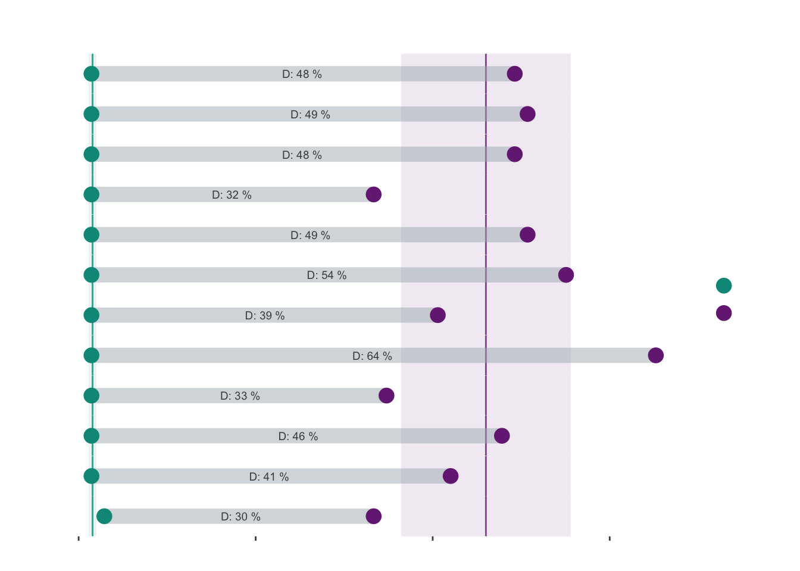
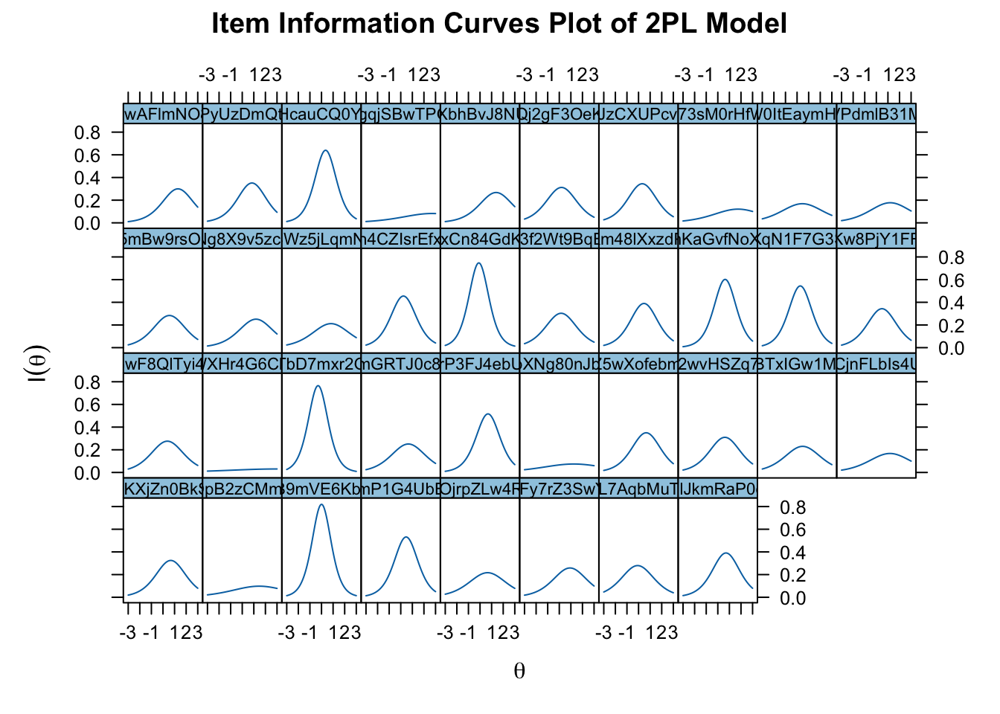

pacman::p_load(tidyverse, knitr, ggridges, ggdist, colorspace, ggrepel, ggthemes, hrbrthemes, patchwork, lubridate, ggstatsplot, plotly, rjson, visNetwork, BiocManager, igraph, cluster, factoextra, stats, hms, caret, ggfortify, gridExtra, GGally, parallelPlot, seriation, dendextend, heatmaply, corrplot, ggalluvial, entropy, ineq) Task 4
Introduction
These are the detailed steps taken for Task 4 of the project.
Objective & Task Requirements
The key objective of Task 3 is:
- To analyse and provide a visual representation of the alignment between question difficulty and learners knowledge level, and hence to identify inappropriate questions where high knowledge level students had a lower correct answering rate.
This would entail the following sub-task requirements:
- To idenify high knowledge students
- To identify any questions that these students had a lower answering rate, and also conversely find those that low knowledge level students scored better in
Getting Started
Loading Required R Package Libraries
The code chunk below loads the following libraries:
tidyverse: an amalgamation of libraries for data handling (including ggplot2, dplyr, tidyr, readr, tibble)knitr: for creating dynamic html tables/reportsggridges: extension of ggplot2 designed for plotting ridgeline plotsggdist: extension of ggplot2 designed for visualising distribution and uncertainty,colorspace: provides a broad toolbox for selecting individual colors or color palettes, manipulating these colors, and employing them in various kinds of visualisations.ggrepel: provides geoms for ggplot2 to repel overlapping text labels.ggthemes: provides additional themes, geoms, and scales for ggplot packagehrbrthemes: provides typography-centric themes and theme components for ggplot packagepatchwork: preparing composite figure created using ggplot packagelubridate: for wrangling of date-time dataggstatplot: provides alternative statistical inference methods by default as an extension of the ggplot2 packageplotly: R library for plotting interactive statistical graphs.rjson: Methods for Cluster analysis.visNetwork: Extract and Visualize the Results of Multivariate Data Analyses.BiocManager: Extension ofggplot2by adding several functions to reduce the complexity of combining geometric objects with transformed data.igraph: Extension ofggplot2by adding several functions to reduce the complexity of combining geometric objects with transformed data.- cluster
- factoextra
- stats
- hms
- caret
- ggfortify
- gridExtra
- GGally
- parallelPlot
- seriation
- dendextend
- heatmaply
- corrplot
- ggalluvial
- entropy
- ineq
Importing the Data
The data for this exercise was collected from a select group of learners over a specified set of programming tasks over a particular learning period, which was compiled in 3 datasets described below. It is accompanied by a separate document providing a more detailed description of the data and variables.
- Dataset 1: Student Information - This comprises of 5 Cols, 1364 Rows, providing individualised demographic variables of the learners (a.k.a students) within the scope this project
- Dataset 2: Learning Subject Title Information - This comprises of 5 Cols, 44 Rows, providing variables of the questions from the programming tasks which are collated in the scope of this project
- Dataset 3: Class Submission Records - This comprises of 15 datasets, each with 10 Cols and various number of rows, providing supposedly the participating learners’ answering variables to the questions collated in the scope of this project
From the raw data, the file was cleaned, prepared and merged in the Data Preparation Steps.
The code chunk below imports the prepared dataset into R environment by using read_csv() function of readr, which is part of the tidyverse package.
merged_data <- readRDS("merged_data_df.rds")
glimpse (merged_data)Rows: 232,811
Columns: 39
$ title_ID <chr> "Question_3MwAFlmNO8EKrpY5zjUd", "Question_3MwAFlmNO8EK…
$ student_ID <chr> "d554e419f820fa5cb0ca", "b92448e12093e45dc6ff", "6b2292…
$ class <chr> "Class9", "Class8", "Class12", "Class7", "Class1", "Cla…
$ time <dbl> 1696330917, 1699625054, 1697444103, 1695964704, 1697727…
$ state <chr> "Partially_Correct", "Partially_Correct", "Error1", "Pa…
$ actual_score <dbl> 1, 1, 0, 1, 0, 0, 1, 0, 2, 1, 1, 0, 1, 1, 0, 1, 0, 1, 1…
$ method <chr> "Method_BXr9AIsPQhwNvyGdZL57", "Method_BXr9AIsPQhwNvyGd…
$ memory <dbl> 196, 332, 0, 196, 0, 0, 336, 320, 324, 204, 340, 320, 3…
$ timeconsume <dbl> 2, 6, 2, 3, 4, 3, 4, 4, 2, 2, 3, 5, 3, 4, 3, 5, 1, 3, 3…
$ time_change <dttm> 2023-10-03 04:09:22, 2023-11-10 07:11:39, 2023-10-16 0…
$ sex <chr> "male", "female", "female", "male", "male", "male", "ma…
$ age <dbl> 19, 21, 23, 20, 21, 20, 19, 20, 21, 21, 21, 21, 21, 21,…
$ major <chr> "J40192", "J23517", "J87654", "J87654", "J40192", "J401…
$ b3C9s_j0v1yls8 <dbl> 0, 0, 0, 0, 0, 0, 0, 0, 0, 0, 0, 0, 0, 0, 0, 0, 0, 0, 0…
$ b3C9s_l4z6od7y <dbl> 0, 0, 0, 0, 0, 0, 0, 0, 0, 0, 0, 0, 0, 0, 0, 0, 0, 0, 0…
$ g7R2j_e0v1yls8 <dbl> 0, 0, 0, 0, 0, 0, 0, 0, 0, 0, 0, 0, 0, 0, 0, 0, 0, 0, 0…
$ g7R2j_j1g8gd3v <dbl> 0, 0, 0, 0, 0, 0, 0, 0, 0, 0, 0, 0, 0, 0, 0, 0, 0, 0, 0…
$ k4W1c_h5r6nux7 <dbl> 0, 0, 0, 0, 0, 0, 0, 0, 0, 0, 0, 0, 0, 0, 0, 0, 0, 0, 0…
$ m3D1v_r1d7fr3l <dbl> 0, 0, 0, 0, 0, 0, 0, 0, 0, 0, 0, 0, 0, 0, 0, 0, 0, 0, 0…
$ m3D1v_t0v5ts9h <dbl> 0, 0, 0, 0, 0, 0, 0, 0, 0, 0, 0, 0, 0, 0, 0, 0, 0, 0, 0…
$ m3D1v_v3d9is1x <dbl> 0, 0, 0, 0, 0, 0, 0, 0, 0, 0, 0, 0, 0, 0, 0, 0, 0, 0, 0…
$ r8S3g_l0p5viby <dbl> 0, 0, 0, 0, 0, 0, 0, 0, 0, 0, 0, 0, 0, 0, 0, 0, 0, 0, 0…
$ r8S3g_n0m9rsw4 <dbl> 0, 0, 0, 0, 0, 0, 0, 0, 0, 0, 0, 0, 0, 0, 0, 0, 0, 0, 0…
$ s8Y2f_v4x8by9j <dbl> 0, 0, 0, 0, 0, 0, 0, 0, 0, 0, 0, 0, 0, 0, 0, 0, 0, 0, 0…
$ t5V9e_e1k6cixp <dbl> 1, 1, 1, 1, 1, 1, 1, 1, 1, 1, 1, 1, 1, 1, 1, 1, 1, 1, 1…
$ y9W5d_c0w4mj5h <dbl> 0, 0, 0, 0, 0, 0, 0, 0, 0, 0, 0, 0, 0, 0, 0, 0, 0, 0, 0…
$ y9W5d_e2j7p95s <dbl> 0, 0, 0, 0, 0, 0, 0, 0, 0, 0, 0, 0, 0, 0, 0, 0, 0, 0, 0…
$ y9W5d_p8g6dgtv <dbl> 0, 0, 0, 0, 0, 0, 0, 0, 0, 0, 0, 0, 0, 0, 0, 0, 0, 0, 0…
$ b3C9s <dbl> 0, 0, 0, 0, 0, 0, 0, 0, 0, 0, 0, 0, 0, 0, 0, 0, 0, 0, 0…
$ g7R2j <dbl> 0, 0, 0, 0, 0, 0, 0, 0, 0, 0, 0, 0, 0, 0, 0, 0, 0, 0, 0…
$ k4W1c <dbl> 0, 0, 0, 0, 0, 0, 0, 0, 0, 0, 0, 0, 0, 0, 0, 0, 0, 0, 0…
$ m3D1v <dbl> 0, 0, 0, 0, 0, 0, 0, 0, 0, 0, 0, 0, 0, 0, 0, 0, 0, 0, 0…
$ r8S3g <dbl> 0, 0, 0, 0, 0, 0, 0, 0, 0, 0, 0, 0, 0, 0, 0, 0, 0, 0, 0…
$ s8Y2f <dbl> 0, 0, 0, 0, 0, 0, 0, 0, 0, 0, 0, 0, 0, 0, 0, 0, 0, 0, 0…
$ t5V9e <dbl> 1, 1, 1, 1, 1, 1, 1, 1, 1, 1, 1, 1, 1, 1, 1, 1, 1, 1, 1…
$ y9W5d <dbl> 0, 0, 0, 0, 0, 0, 0, 0, 0, 0, 0, 0, 0, 0, 0, 0, 0, 0, 0…
$ question_score <dbl> 2, 2, 2, 2, 2, 2, 2, 2, 2, 2, 2, 2, 2, 2, 2, 2, 2, 2, 2…
$ knowledge <chr> "t5V9e", "t5V9e", "t5V9e", "t5V9e", "t5V9e", "t5V9e", "…
$ sub_knowledge <chr> "t5V9e_e1k6cixp", "t5V9e_e1k6cixp", "t5V9e_e1k6cixp", "…Metrics Selection and Computation
For High and Low Knowledge Level Learners
Based on assessment of the given data and contextual information provided, the selected approach to identify high knowledge level learners is as follows:
- Compute mastery points of students
Recap on Mastery Point metric from task 1:
Proportion of absolutely and partially correct attempts: - absolutely correct attempts - award 1 pt - partially correct attempts - award (actual_score / question_score) - normalise attempts across questions - uses (total point / total attempts)
Use of more than 1 method per question - multiply by no. of methods if absolutely correct attempt submitted for that question
Identify the top percentile of students with the highest mastery points as high mastery students
Conversely, identify the bottom percentile of students with lowest mastery points as low mastery students
This is computed in the following code chunks.
# Assign points to attempts based on state and actual score
adjusted_scores <- merged_data %>%
mutate(points = case_when(
state == "Absolutely_Correct" ~ 1,
state == "Partially_Correct" ~ actual_score / question_score,
TRUE ~ 0 # default case for any unexpected states
))
# Assign points to title_IDs per student factoring in normalisation and multiple methods used
mastery_scores_byQns <- adjusted_scores %>%
group_by(student_ID, title_ID) %>%
summarise(
total_points = sum(points),
total_attempts = n(),
unique_methods = n_distinct(method),
absolutely_correct_methods = sum(points == 1)
) %>%
mutate(
adjusted_points = total_points / total_attempts,
adjusted_points = adjusted_points * ifelse(absolutely_correct_methods > 0, unique_methods, 1)
)
glimpse(mastery_scores_byQns)Rows: 50,482
Columns: 7
Groups: student_ID [1,364]
$ student_ID <chr> "0088dc183f73c83f763e", "0088dc183f73c83f76…
$ title_ID <chr> "Question_3MwAFlmNO8EKrpY5zjUd", "Question_…
$ total_points <dbl> 1.000000, 1.000000, 4.666667, 7.666667, 1.0…
$ total_attempts <int> 23, 9, 7, 22, 1, 1, 2, 4, 8, 11, 1, 1, 5, 1…
$ unique_methods <int> 5, 4, 5, 5, 1, 1, 1, 2, 5, 5, 1, 1, 2, 1, 1…
$ absolutely_correct_methods <int> 1, 1, 1, 1, 1, 1, 1, 1, 2, 1, 1, 1, 1, 1, 1…
$ adjusted_points <dbl> 0.2173913, 0.4444444, 3.3333333, 1.7424242,…# Combine the adjusted score with knowledge-transposed titleInfo dataframe
mastery_scores2 <- df_TitleInfo_gp %>%
distinct(title_ID, .keep_all = TRUE) %>%
left_join(mastery_scores1, by = "title_ID") %>%
rename(knowledge = knowledge.x) %>%
select(-score,
-knowledge.y)
glimpse(mastery_scores2)# Summing up points to identify high and low mastery students
mastery_scores_byStudent <- mastery_scores_byQns %>%
group_by(student_ID) %>%
summarize(
# Part (a): Sum of total points across all questions
`Sum of points Overall` = sum(adjusted_points, na.rm = TRUE)
)
glimpse(mastery_scores_byStudent)Rows: 1,364
Columns: 2
$ student_ID <chr> "0088dc183f73c83f763e", "00cbf05221bb479e66c3"…
$ `Sum of points Overall` <dbl> 38.75682, 35.69721, 35.28832, 42.32937, 31.982…str(mastery_scores_byStudent)tibble [1,364 × 2] (S3: tbl_df/tbl/data.frame)
$ student_ID : chr [1:1364] "0088dc183f73c83f763e" "00cbf05221bb479e66c3" "00df647ee4bf7173642f" "0107f72b66cbd1a0926d" ...
$ Sum of points Overall: num [1:1364] 38.8 35.7 35.3 42.3 32 ...head(mastery_scores_byStudent)# A tibble: 6 × 2
student_ID `Sum of points Overall`
<chr> <dbl>
1 0088dc183f73c83f763e 38.8
2 00cbf05221bb479e66c3 35.7
3 00df647ee4bf7173642f 35.3
4 0107f72b66cbd1a0926d 42.3
5 011d454f199c123d44ad 32.0
6 01558eef77a8d39b7103 38.2The high knowledge level (aka high mastery) and low knowledge level (aka low mastery) are identified with the following code chunk
calculate_threshold_scores <- function(df, column, threshold) {
percentile <- as.numeric(sub("%", "", threshold)) / 100
threshold_score <- quantile(df[[column]], percentile, na.rm = TRUE)
return(threshold_score)
}
# Calculate threshold scores for 99% and 1%
threshold_95 <- calculate_threshold_scores(mastery_scores_byStudent, "Sum of points Overall", "95%")
threshold_5 <- calculate_threshold_scores(mastery_scores_byStudent, "Sum of points Overall", "5%")
# Filter high and low mastery students based on the threshold scores
high_mastery_students <- mastery_scores_byStudent %>%
filter(`Sum of points Overall` > threshold_95)
low_mastery_students <- mastery_scores_byStudent %>%
filter(`Sum of points Overall` < threshold_5)
glimpse(high_mastery_students)Rows: 69
Columns: 2
$ student_ID <chr> "03754dce5ec7731fb3e2", "06aff3e28c5db152f506"…
$ `Sum of points Overall` <dbl> 59.30627, 53.34722, 48.94286, 54.85595, 50.353…glimpse(low_mastery_students)Rows: 69
Columns: 2
$ student_ID <chr> "02068067a434adb6556a", "05e1c3ce1728da7e37e0"…
$ `Sum of points Overall` <dbl> 0.0000000, 17.1165831, 23.5655844, 21.9944444,…Poor correct answer rate
Based on assessment of the given data and contextual information provided, the selected metrics to identify poor correct answering rate is assessed to be as follows:
- Never Correct Questions - Questions where a learner never gotten absolutely correct across all answers submitted
- Error rate - percentage of wrong answer (0 score) submissions
# Never Correct title_IDs for individual students
never_absolutely_correct <- merged_data %>%
group_by(student_ID, title_ID) %>%
summarise(
never_absolutely_correct = all(state != "Absolutely_Correct"),
.groups = 'drop'
) %>%
filter(never_absolutely_correct)
# Save processed dataset
saveRDS(never_absolutely_correct, file = "never_absolutely_correct.RDS")
glimpse(never_absolutely_correct)Rows: 7,022
Columns: 3
$ student_ID <chr> "01qkq6w2v62cimidb3b7", "01qkq6w2v62cimidb3b7…
$ title_ID <chr> "Question_4nHcauCQ0Y6Pm8DgKlLo", "Question_62…
$ never_absolutely_correct <lgl> TRUE, TRUE, TRUE, TRUE, TRUE, TRUE, TRUE, TRU…# Calculate the error rate with consideration of different methods
percentage_error <- merged_data %>%
group_by(student_ID, title_ID) %>%
summarise(
total_attempts = n(),
wrong_attempts = sum(state != "Absolutely_Correct"),
percentage_wrong = (wrong_attempts / total_attempts) * 100,
.groups = 'drop'
)
# View the result
glimpse(percentage_error)Rows: 50,482
Columns: 5
$ student_ID <chr> "0088dc183f73c83f763e", "0088dc183f73c83f763e", "0088…
$ title_ID <chr> "Question_3MwAFlmNO8EKrpY5zjUd", "Question_3oPyUzDmQt…
$ total_attempts <int> 23, 9, 7, 22, 1, 1, 2, 4, 8, 11, 1, 1, 5, 1, 1, 14, 2…
$ wrong_attempts <int> 22, 8, 6, 21, 0, 0, 1, 3, 6, 10, 0, 0, 4, 0, 0, 12, 0…
$ percentage_wrong <dbl> 95.65217, 88.88889, 85.71429, 95.45455, 0.00000, 0.00…# Save processed dataset
saveRDS(percentage_error, file = "percentage_error.RDS")Visualising In appropriate questions
Dumbell plot
Dumbbell Plot Analysis Utilizing a dumbbell plot, we examined the discrepancies in question performance between high and low mastery students based on percentage of never correct questions.
# Filter never absolutely correct questions based on high mastery students
filtered_never_correct <- never_absolutely_correct %>%
filter(student_ID %in% high_mastery_students$student_ID) %>%
distinct(student_ID, title_ID) %>%
group_by(title_ID) %>%
summarise(
# number_of_students = n_distinct(student_ID[never_absolutely_correct == TRUE]),
number_of_students = n(),
.groups = 'drop') %>%
# left_join(aggregate_title_info, by = "title_ID") %>%
mutate(percentage_of_student_wrong = (number_of_students/length(high_mastery_students$student_ID)*100))
# Check if bottom percentage students got the questions that were never correct by high mastery students correct
bottom_percentage_never_correct <- merged_data %>%
filter(student_ID %in% low_mastery_students$student_ID) %>%
filter(title_ID %in% filtered_never_correct$title_ID) %>%
filter(state == "Absolutely_Correct") %>%
distinct(student_ID, title_ID) %>%
group_by(title_ID) %>%
summarise(no_of_students = n(), .groups = 'drop') %>%
mutate(percentage_of_student_right = (no_of_students/length(low_mastery_students$student_ID)*100))
glimpse(filtered_never_correct)Rows: 12
Columns: 3
$ title_ID <chr> "Question_3oPyUzDmQtcMfLpGZ0jW", "Question…
$ number_of_students <int> 1, 1, 1, 1, 1, 2, 1, 1, 1, 1, 1, 1
$ percentage_of_student_wrong <dbl> 1.449275, 1.449275, 1.449275, 1.449275, 1.…glimpse(bottom_percentage_never_correct)Rows: 12
Columns: 3
$ title_ID <chr> "Question_3oPyUzDmQtcMfLpGZ0jW", "Question…
$ no_of_students <int> 34, 35, 34, 35, 29, 23, 23, 38, 28, 45, 24…
$ percentage_of_student_right <dbl> 49.27536, 50.72464, 49.27536, 50.72464, 42… # Calculate percentages for high mastery and low mastery students
high_mastery_percent <- filtered_never_correct %>%
mutate(high_mastery = number_of_students / nrow(high_mastery_students) * 100) %>%
select (title_ID, high_mastery)
low_mastery_percent <- bottom_percentage_never_correct %>%
mutate(low_mastery = no_of_students / nrow(low_mastery_students) * 100) %>%
select (title_ID, low_mastery)
comparison_data <- high_mastery_percent %>%
left_join(low_mastery_percent, by = "title_ID") %>%
mutate(diff = round(low_mastery - high_mastery),digits = 2) %>%
pivot_longer (cols = c(low_mastery,high_mastery)) %>%
rename (type_of_student = name,
percentage = value)
low_mastery <- comparison_data %>%
filter(type_of_student == "low_mastery")
high_mastery <- comparison_data %>%
filter(type_of_student == "high_mastery")
stats <- comparison_data %>%
group_by(type_of_student) %>%
summarise(mean = mean(percentage),
SE = sd(percentage)) %>%
mutate(meanpos = mean + 1 *SE,
meanneg = mean - 1 *SE)
stats_low_mastery <- stats %>%
filter(type_of_student == "low_mastery")
stats_high_mastery <- stats %>%
filter(type_of_student == "high_mastery")
diff <- comparison_data %>%
filter(type_of_student == "low_mastery") %>%
mutate(x_pos = percentage + (-diff/2))
comparison_spread <- comparison_data %>%
spread(type_of_student, percentage)
# Join the stats to get the mean values
comparison_spread <- comparison_spread %>%
left_join(stats %>% filter(type_of_student == "high_mastery") %>% select(-type_of_student), by = character()) %>%
rename(high_mastery_mean = mean, high_mastery_SE = SE, high_mastery_meanpos = meanpos, high_mastery_meanneg = meanneg) %>%
left_join(stats %>% filter(type_of_student == "low_mastery") %>% select(-type_of_student), by = character()) %>%
rename(low_mastery_mean = mean, low_mastery_SE = SE, low_mastery_meanpos = meanpos, low_mastery_meanneg = meanneg)
# Create the color condition
comparison_spread <- comparison_spread %>%
mutate(color_condition = case_when(
high_mastery > high_mastery_meanpos & low_mastery > low_mastery_meanpos ~ "red",
TRUE ~ "default"
))
# Gather the data back to long format
comparison_long <- comparison_spread %>%
gather(type_of_student, percentage, high_mastery, low_mastery) %>%
mutate(type_of_student = factor(type_of_student, levels = c("high_mastery", "low_mastery"))) %>%
mutate (color_condition = ifelse(color_condition == "default", type_of_student, color_condition))
comparison_long$color_condition <- as.factor(comparison_long$color_condition) ggplot(comparison_long) +
geom_rect(xmin = stats_low_mastery$meanneg, xmax = stats_low_mastery$meanpos,
ymin = 0, ymax = 38, fill = "#762a83", alpha = .05) +
geom_vline(xintercept = stats_low_mastery$mean, linetype = "solid", size = .5, alpha = .8, color = "#762a83")+
geom_rect(xmin = stats_high_mastery$meanneg, xmax = stats_high_mastery$meanpos,
ymin = 0, ymax = 38, fill = "#009688", alpha = .05)+
geom_vline(xintercept = stats_high_mastery$mean, color = "#009688", linetype = "solid", size = .5, alpha = .8) +
geom_segment(data = low_mastery,
aes(x = percentage, y = title_ID,
yend = high_mastery$title_ID, xend = high_mastery$percentage),
color = "#aeb6bf",
size = 4.5,
alpha = 0.5) +
geom_point(aes(x = percentage, y = title_ID, color = color_condition), size = 4, show.legend = TRUE) +
#color points
scale_color_manual(values = c("1" = "#009688", "2" = "#762a83", "red" = "red"))+
#add annotations for mean and standard deviations
geom_text(x = stats_low_mastery$mean + 5, y = 38, label = "MEAN", angle = 90, size = 2.5, color = "#009688")+
geom_text(x = stats_low_mastery$meanpos + 5, y = 38, label = "STDEV", angle = 90, size = 2.5, color = "#009688")+
ggtitle("Comparison of High Mastery Student Never Correct Percentage vs Low Mastery Student Correct Percentage") +
geom_text (data = diff,
aes(label = paste("D:", diff, "%"), x = x_pos, y = title_ID),
color = "#4a4e4d",
size = 2.5) +
facet_grid(title_ID ~ ., scales = "free", switch = "y") +
theme_minimal()+
theme(panel.grid.major.y = element_blank(),
panel.grid.minor.y = element_blank(),
panel.grid.major.x = element_blank(),
panel.grid.minor.x = element_blank(),
axis.title.y = element_blank(),
axis.text.y = element_blank(),
axis.ticks.y = element_blank(),
axis.ticks.x = element_line(color = "#4a4e4d"),
text = element_text(family = "Segoe UI Semibold", color = "#4a4e4d"),
strip.text.y.left = element_text(angle = 0),
panel.background = element_rect(fill = "white", color = "white"),
strip.background = element_rect(fill = "white", color = "white"),
strip.text = element_text(color = "#4a4e4d", family = "Segoe UI"),
plot.background = element_rect(fill = "white", color = "white"),
panel.spacing = unit(0, "lines"),
plot.margin = margin(1,1,.5,1, "cm"))
Lollipop Chart Analysis
Our subsequent analysis involved a lollipop chart to identify the error rates among high mastery students across all assessed questions.
percentage_error <- percentage_error %>%
filter (student_ID %in% high_mastery_students$student_ID) %>%
group_by(title_ID) %>%
summarise (avg_percentage_wrong = mean(percentage_wrong))
percentile_75 <- quantile(percentage_error$avg_percentage_wrong, 0.75)
percentage_error <- percentage_error %>%
mutate(highlight = ifelse(avg_percentage_wrong > percentile_75, "Above 75 Percentile", "Below 75 Percentile"))
ggplot(percentage_error, aes(x = reorder(title_ID,avg_percentage_wrong), y = avg_percentage_wrong, color = highlight)) +
geom_segment(aes(x = title_ID, xend = title_ID, y = 0, yend = avg_percentage_wrong), color = "grey") +
geom_point(size = 4, alpha = 0.8) +
scale_color_manual(values = c("Above 75 Percentile" = "red", "Below 75 Percentile" = "blue"), name = "Error Quantile") +
labs(
title = "Average Error Rate per Question for High Mastery Students",
x = "Title ID",
y = "Percentage of Error Rate"
) +
theme_light() +
coord_flip() +
theme(
panel.grid.major.y = element_blank(),
panel.border = element_blank(),
axis.ticks.y = element_blank(),
axis.title.y = element_text(size = 14, color = "black"),
axis.title.x = element_text(size = 14, color = "black"),
plot.title = element_text(size = 14, hjust = 0.5, face = "bold", color = "black"),
legend.title = element_text(size = 10),
legend.text = element_text(size = 10),
legend.position = "bottom",
panel.spacing.x = unit(2, "cm")
)
By focusing on the 75th percentile of error rates, we identified several questions that frequently tripped up otherwise proficient students. Notable examples include Question_5fgqjSBwTPG7KUV3it6O and Question_YWXHr4G6Cl7bEm9iF2kQ, which consistently demonstrated higher error rates, indicating potential misalignment with the expected competencies of high mastery students. These findings highlight the need for a reassessment of these questions to ensure they accurately measure and reflect true student performance.
Information Characteristic Curve (ICC) Analysis
Further insights were gleaned from an Information Characteristic Curve (ICC) analysis using a two-parameter Item Response Theory model to determine the degree by which questions will differentiate in performance between high and low knowledge level students.
student_question <- merged_data %>%
group_by(student_ID, title_ID) %>%
summarise (count = n()) %>%
ungroup()
student_question <- student_question %>%
group_by(student_ID) %>%
summarise (count = n()) %>%
filter (count >1) %>%
ungroup()first_attempt_data <- merged_data %>%
group_by(student_ID, title_ID) %>%
slice(1) %>%
mutate (true_points = case_when(
state == "Absolutely_Correct" ~ 1,
TRUE ~ 0
)) %>%
select (student_ID, title_ID, true_points)
first_attempt_long <- pivot_wider(first_attempt_data,
names_from = title_ID, values_from = true_points) %>%
filter (student_ID %in% student_question$student_ID)library (mirt)
first_attempt_long <- first_attempt_long %>%
mutate_all(~ replace_na(., 0))
saveRDS(first_attempt_long, "mirtdata.RDS")
first_attempt_long_high <- first_attempt_long %>%
filter(student_ID %in% high_mastery_students$student_ID | student_ID %in% low_mastery_students$student_ID)
fit3PL <- mirt(data = first_attempt_long_high[2:39],
model = 1, # alternatively, we could also just specify model = 1 in this case
itemtype = "2PL",
SE = TRUE,
verbose = FALSE)
fit3PL
Call:
mirt(data = first_attempt_long_high[2:39], model = 1, itemtype = "2PL",
SE = TRUE, verbose = FALSE)
Full-information item factor analysis with 1 factor(s).
Converged within 1e-04 tolerance after 19 EM iterations.
mirt version: 1.41
M-step optimizer: BFGS
EM acceleration: Ramsay
Number of rectangular quadrature: 61
Latent density type: Gaussian
Information matrix estimated with method: Oakes
Second-order test: model is a possible local maximum
Condition number of information matrix = 13.58293
Log-likelihood = -2899.229
Estimated parameters: 76
AIC = 5950.458
BIC = 6171.82; SABIC = 5931.398
G2 (1e+10) = 4462.22, p = 1
RMSEA = 0, CFI = NaN, TLI = NaNdf_IRT <- readRDS ("mirtdata.RDS")
df_IRT <- df_IRT %>%
filter(student_ID %in% high_mastery_students$student_ID | student_ID %in% low_mastery_students$student_ID)
fit3PL <- mirt(data = df_IRT[2:39],
model = 1, # alternatively, we could also just specify model = 1 in this case
itemtype = "2PL",
SE = TRUE,
verbose = FALSE)
plot(fit3PL, type = 'infotrace', which.item = c(1:38), facet_items = TRUE,
as.table = TRUE, auto.key = list(points = FALSE, lines = TRUE, columns = 1, space = 'right', cex = .8),
theta_lim = c(-3, 3),
main = "Item Information Curves Plot of 2PL Model",
layout = c(10, ceiling(38 / 10)))
plot(fit3PL, type = 'trace', which.item = c(1:38), facet_items = TRUE,
as.table = TRUE, auto.key = list(points = FALSE, lines = TRUE, columns = 1, space = 'right', cex = .8),
theta_lim = c(-3, 3),
main = "Category Characteristic Curves Plot of 2PL Model",
layout = c(10, ceiling(38 / 10)))
This analysis highlighted items like Question_h7pXNg80nJbw1C4kAPRm and Question_Az73sM0rHfWVKuc4X2kL, which showed shallow gradients and did not peak at optimal probabilities. This indicates a low discrimination ability among various student abilities, underscoring the ineffectiveness of these questions in differentiating between differing levels of student mastery. Coupled with information from high mastery student ICCs, which ideally should show steeper slopes, it was confirmed that even top-performing students struggled with these questions, suggesting they are poorly suited for assessing high-level competencies.